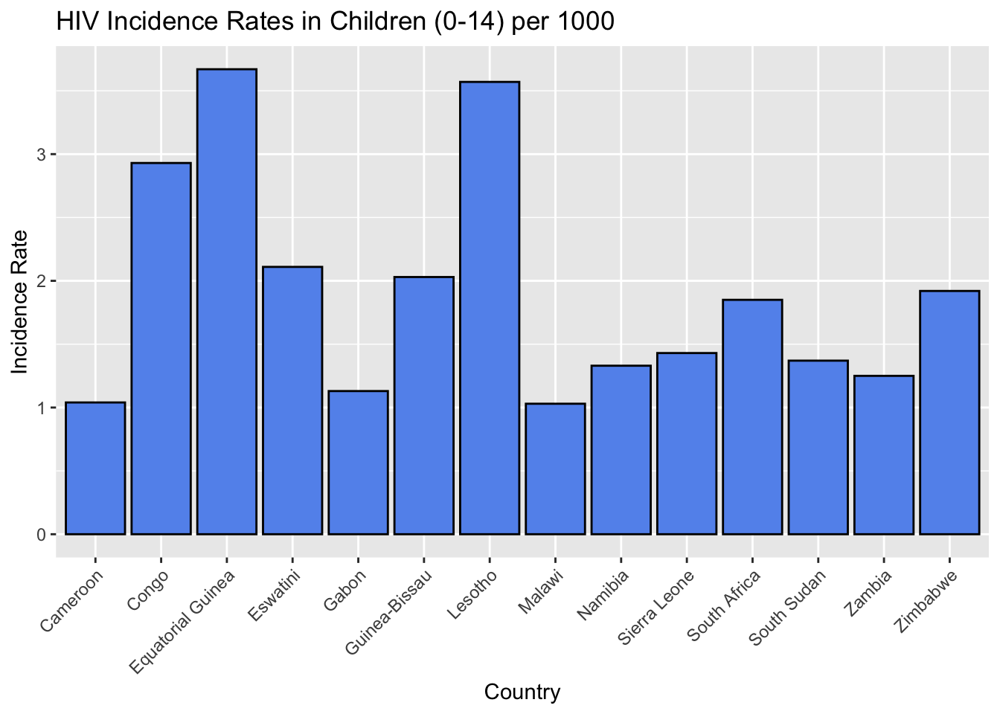
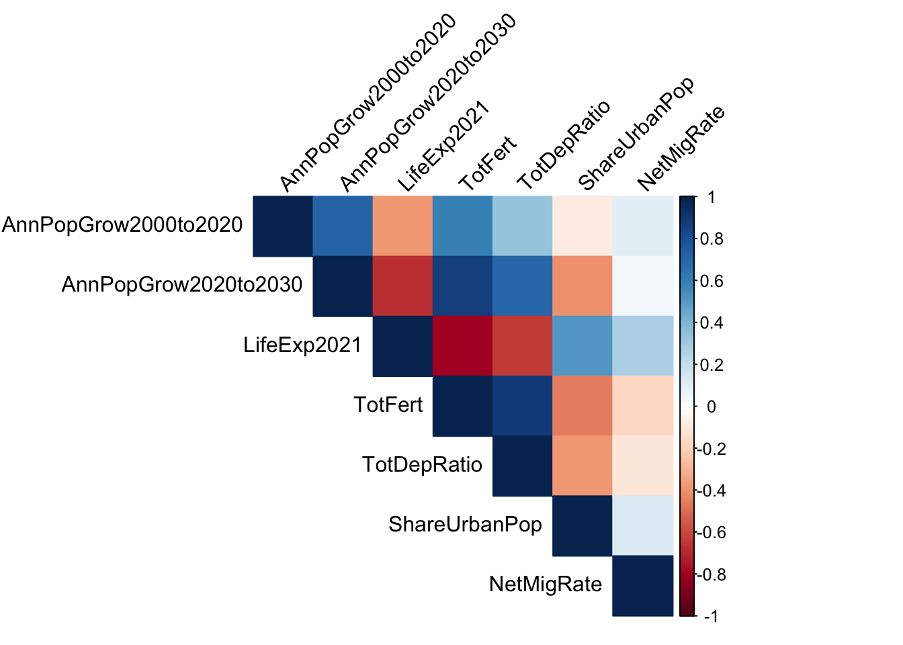

3.1 Bar Chart (Incidence Rates in Children (0-14))
Code
data$inciChildren0to14 <-as.numeric(data$inciChildren0to14)filtered_data <- data %>%filter(inciChildren0to14 >1)ggplot(filtered_data, aes(x = Countries, y = inciChildren0to14)) +geom_bar(stat ="identity", fill ='cornflowerblue', color ='black') +theme(axis.text.x =element_text(angle =45, hjust =1)) +labs(title ="HIV Incidence Rates in Children (0-14)", x ="Country", y ="Incidence Rate")
3.2 Histogram (Distribution of Mortality Rates in Adoloscents(10-19))
Code
data$mortAdolescents10to19 <-as.numeric(data$mortAdolescents10to19)sorted_data <- data %>%arrange(desc(mortAdolescents10to19))ggplot(data, aes(x = mortAdolescents10to19)) +geom_histogram(binwidth =2, fill ="cornflowerblue", color ="black") +labs(title ="Distribution of HIV Mortality Rates in Adolescents(10-19)")

Code
data_demo <-read_csv("./data/Demographics.csv")
Warning: One or more parsing issues, call `problems()` on your data frame for details,
e.g.:
dat <- vroom(...)
problems(dat)
Rows: 202 Columns: 18
── Column specification ────────────────────────────────────────────────────────
Delimiter: ","
chr (10): Countries, PopU18, PopU5, TotDepRatio, ChildDepRatio, OldAgeDepRat...
dbl (8): PopUtot, AnnPopGrow2000to2020, AnnPopGrow2020to2030, AnnBirths, To...
ℹ Use `spec()` to retrieve the full column specification for this data.
ℹ Specify the column types or set `show_col_types = FALSE` to quiet this message.
Code
data_demo[data_demo =='-'] <-NA#Replace the NA values with 0'sfor(column_name innames(data_demo)) { data[[column_name]][is.na(data_demo[[column_name]])] <-0}
3.3 Scatter Plot for Life Expectancy and Annual Population Growth (2020-2030)
Code
library(ggplot2)library(plotly)
Attaching package: 'plotly'
The following object is masked from 'package:ggplot2':
last_plot
The following object is masked from 'package:stats':
filter
The following object is masked from 'package:graphics':
layout
Code
data_demo$LifeExp2021 <-as.numeric(data_demo$LifeExp2021)data_demo$AnnPopGrow2020to2030 <-as.numeric(data_demo$AnnPopGrow2020to2030)p <-ggplot(data_demo, aes(x = LifeExp2021, y = AnnPopGrow2020to2030)) +geom_point(aes(color = Countries))+labs(title ="Life Expectancy vs Annual Population Growth (2020-2030)",x ="Life Expectancy",y ="Annual Population Growth(2020-2030)") +theme_minimal()ggplotly(p, tooltip ="text")
3.4 Line Chart for Life Expectancy in 2021 for the top 10 Countries
Code
library(ggplot2)library(dplyr)data_demo$LifeExp2021 <-as.numeric(data_demo$LifeExp2021)top_countries <- data_demo %>%top_n(10, LifeExp2021) %>%arrange(LifeExp2021)ggplot(top_countries, aes(x =reorder(Countries, LifeExp2021), y = LifeExp2021, group=1 ))+geom_line() +geom_point() +labs(title ="Life Expentacy in 2021 for the top 10 Countries",x ="Countries",y ="Life Expectancy in 2021") +theme_minimal()+coord_flip()
Warning in lapply(data_demo[numerical_cols], as.numeric): NAs introduced by
coercion
Code
corr_matrix <-cor(data_demo[numerical_cols], use ='complete.obs')corrplot(corr_matrix, method='color', tl.col="black", type ="upper", tl.srt =45)
3.6 Pie Chart for Population Breakdown
Code
library(ggplot2)data_demo$PopUtot <-as.numeric(data_demo$PopUtot)data_demo$PopU18 <-as.numeric(data_demo$PopU18)data_demo$PopU5 <-as.numeric(data_demo$PopU5)country_data <- data_demo[117, ]long_data <- country_data %>% selectpie_data <-data.frame(Category =c("Population under 5", "Population under 18", "Others"),Values =c(country_data$PopU5, country_data$PopU18, country_data$PopUtot - country_data$PopU5 - country_data$PopU18))ggplot(pie_data, aes(x ="", y = Values, fill = Category)) +geom_bar(width =1, stat ='identity') +coord_polar("y", start =0) +theme_void()+labs(title =paste("Population Breakdown for ", country_data$Countries)) +theme(legend.title =element_blank()) +scale_fill_brewer(palette ="Pastel1")

3.7 Stacked Bar chart for top 3 countries
Code
library(ggplot2)library(dplyr)library(tidyr)# Assuming the data is already loaded into a variable named 'data_demo'# Convert the relevant columns to numericdata_demo$PopUtot <-as.numeric(data_demo$PopUtot)data_demo$PopU18 <-as.numeric(data_demo$PopU18)data_demo$PopU5 <-as.numeric(data_demo$PopU5)# Select countries based on specified row numbersselected_countries <- data_demo[c(10, 90), ]# Reshape the data into a long format for plottinglong_data <- selected_countries %>%select(Countries, PopUtot, PopU18, PopU5) %>%pivot_longer(cols =c("PopU18", "PopU5"), names_to ="Category", values_to ="Values") %>%mutate(Category =case_when( Category =="PopU18"~"Population Under 18", Category =="PopU5"~"Population Under 5",TRUE~"Others" ))# Calculate the 'Others' categorylong_data$Values[long_data$Category =="Others"] <-with(selected_countries, PopUtot - PopU18 - PopU5)# Create the stacked bar chartggplot(long_data, aes(x = Countries, y = Values, fill = Category)) +geom_bar(stat ='identity') +labs(title ="Population Breakdown for Selected Countries",x ="Country", y ="Population") +scale_fill_brewer(palette ="Pastel1") +theme_minimal()